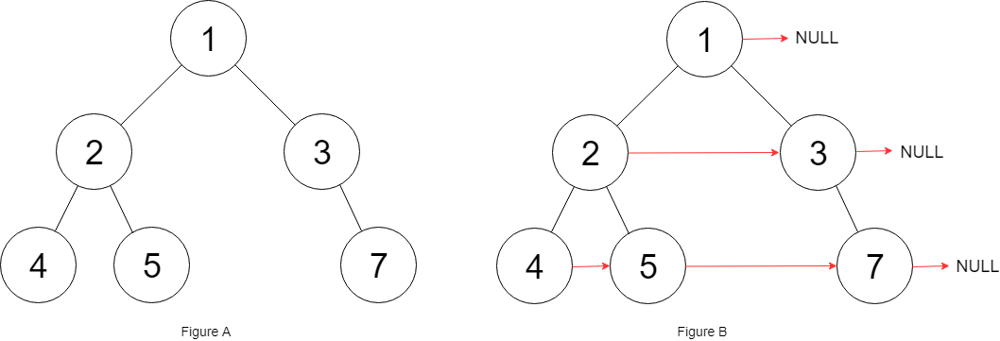

117. 填充每个节点的下一个右侧节点指针 II
| 题目信息 | 内容 |
|---|---|
| 难度 | 中等 |
| 核心模式 | dummy 哑节点 + tail 逐层串接（O(1) 空间） |
| 时间复杂度 | O(n) |
| 空间复杂度 | O(1) |
题目与约束
给定一个二叉树：
struct Node {
int val;
Node *left;
Node *right;
Node *next;
}
填充它的每个 next 指针，让这个指针指向其下一个右侧节点。如果找不到下一个右侧节点，则将 next 指针设置为 NULL 。
初始状态下，所有 next 指针都被设置为 NULL 。
示例 1：

输入：root = [1,2,3,4,5,null,7]
输出：[1,#,2,3,#,4,5,7,#]
解释：给定二叉树如图 A 所示，你的函数应该填充它的每个 next 指针，以指向其下一个右侧节点，如图 B 所示。序列化输出按层序遍历顺序（由 next 指针连接），'#' 表示每层的末尾。
示例 2：
输入：root = []
输出：[]
提示：
-
树中的节点数在范围
[0, 6000]内 -
-100 <= Node.val <= 100
进阶：
-
你只能使用常量级额外空间。
-
使用递归解题也符合要求，本题中递归程序的隐式栈空间不计入额外空间复杂度。
核心不变量
用一个
dummy哑节点加tail指针，在横向遍历当前层的同时，把下一层节点按出现顺序串成一条next链。
完整推导
思路推导
- 与 116 的关键差别
本题是 任意二叉树，父节点可能只有左孩子、只有右孩子，甚至没有孩子。116 里“head.left 一定存在、左右成对”的前提不再成立，不能再直接写 head.left.next = head.right。
- 仍然想 O(1) 空间横向遍历
当前层已经有一条通过 next 建好的链，可以顺着它从左到右扫。但下一层的节点数量、位置都不确定，怎么把它们串起来？答案是 哑节点。
- dummy + tail 技巧
为下一层新建一个虚拟头 dummy，tail 从 dummy 出发。扫描当前层每个节点 cur：
- 若 cur.left 存在，接到 tail.next，tail 后移；
- 若 cur.right 存在，同样接到 tail.next，tail 后移。
扫完整层后，dummy.next 就是下一层的第一个真实节点。
- 逐层下沉
cur = dummy.next 进入下一层；当 cur 变为空，说明所有层都处理完毕，循环结束。
Java 实现（connect）
/*
// Definition for a Node.
class Node {
public int val;
public Node left;
public Node right;
public Node next;
public Node() {}
public Node(int _val) { val = _val; }
public Node(int _val, Node _left, Node _right, Node _next) {
val = _val;
left = _left;
right = _right;
next = _next;
}
};
*/
class Solution {
public Node connect(Node root) {
Node cur = root;
// cur 逐层下移，代表当前层最左侧可用的节点
while (cur != null) {
// dummy 作为下一层链表的虚拟头，tail 负责串接
Node dummy = new Node(0);
Node tail = dummy;
// 借助当前层已建好的 next 链横向遍历
while (cur != null) {
if (cur.left != null) {
tail.next = cur.left;
tail = tail.next;
}
if (cur.right != null) {
tail.next = cur.right;
tail = tail.next;
}
cur = cur.next;
}
// 跳到下一层的第一个真实节点
cur = dummy.next;
}
return root;
}
}
复杂度
- 时间：
O(n)，每个节点都被扫描一次并接入下一层链表。 - 空间：
O(1)，只有dummy、tail、cur等常数个指针，未使用队列。
易错点与扩展（面试高频考点）
- 必须判孩子是否存在：任意树里
cur.left、cur.right都可能为空，绝不能像 116 那样默认成对出现。 - dummy 每层新建：
tail从dummy开始，dummy.next才是下一层头；用dummy本身当层头会多出一个假节点。 cur的推进依赖next：内层用cur = cur.next横向走，外层用cur = dummy.next下沉，两个含义不同，别混用。- 空树返回
root（null）：循环条件天然处理，无需特殊分支。 - 不能用队列：BFS 队列空间
O(w)不满足“常量级额外空间”进阶；dummy 技巧正是为省空间设计的。
力扣原题
C++ 实现
/*
// Definition for a Node.
class Node {
public:
int val;
Node* left;
Node* right;
Node* next;
Node() : val(0), left(NULL), right(NULL), next(NULL) {}
Node(int _val) : val(_val), left(NULL), right(NULL), next(NULL) {}
Node(int _val, Node* _left, Node* _right, Node* _next)
: val(_val), left(_left), right(_right), next(_next) {}
};
*/
class Solution {
public:
Node* connect(Node* root) {
Node* cur = root;
while (cur != nullptr) {
// dummy 是下一层链表的虚拟头，tail 负责串接
Node dummy(0);
Node* tail = &dummy;
while (cur != nullptr) {
if (cur->left != nullptr) {
tail->next = cur->left;
tail = tail->next;
}
if (cur->right != nullptr) {
tail->next = cur->right;
tail = tail->next;
}
cur = cur->next;
}
// 下沉到下一层第一个真实节点
cur = dummy.next;
}
return root;
}
};
Python 实现
"""
# Definition for a Node.
class Node:
def __init__(self, val: int = 0, left: 'Node' = None, right: 'Node' = None, next: 'Node' = None):
self.val = val
self.left = left
self.right = right
self.next = next
"""
class Solution:
def connect(self, root: 'Node') -> 'Node':
cur = root
while cur:
# dummy 是下一层链表的虚拟头，tail 负责串接
dummy = Node(0)
tail = dummy
while cur:
if cur.left:
tail.next = cur.left
tail = tail.next
if cur.right:
tail.next = cur.right
tail = tail.next
cur = cur.next
# 下沉到下一层第一个真实节点
cur = dummy.next
return root